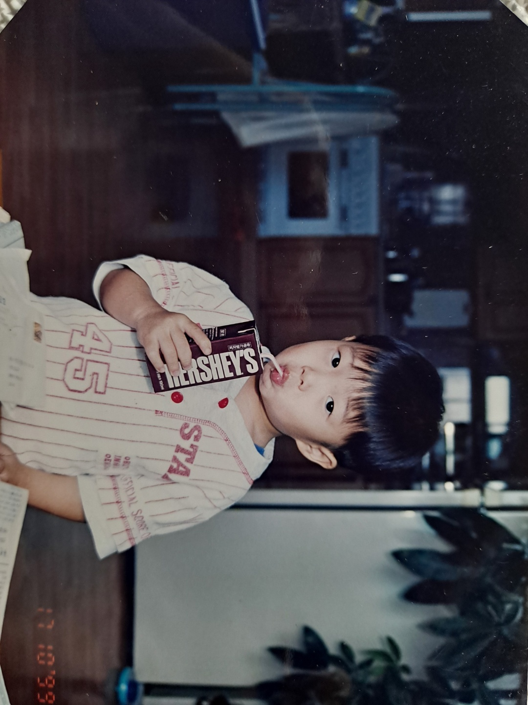
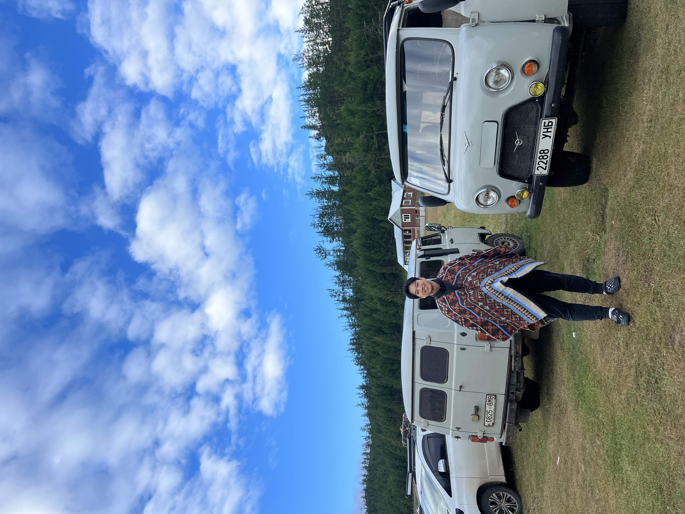
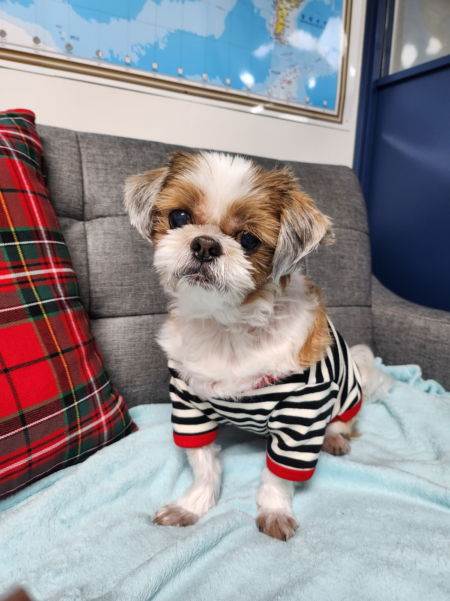
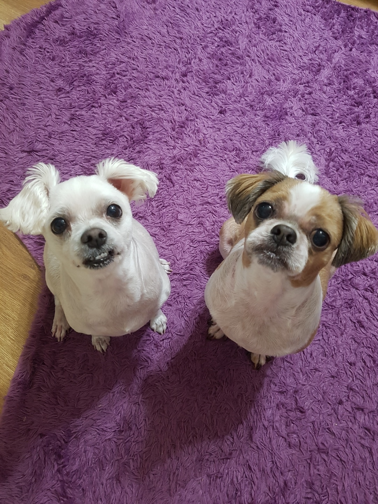

제이콥
안녕하세요, 제이콥입니다:)
안녕하세요, 제이콥입니다:)
| 이름 | 조경현 |
|---|---|
| MBTI | ISFJ |
| 취미 | 축구/야구 경기 시청 |
| 좋아하는 음식 | 삼겹살🥓 |
스포츠 보는 것과 하는 것 모두 좋아합니다. 요즘엔 야구를 많이 봐요. 곧 MLB 시즌이 시작되는데 LA다저스가 3연속 우승하는 걸 보고싶습니다:) 더 많은 기록은 블로그, 개발 관련 코드는 GitHub에서 확인할 수 있어요.
나와 내가 사랑하는 존재들







오늘 새롭게 배운 내용을 기록합니다.
JavaScript에서 `querySelector()`로 요소를 선택하고 동적으로 노드를 추가하는 방법을 복습했다.